Making Group Travel Easier—for Planners and Tagalongs Alike
TripSync helps friends plan group trips with less back-and-forth. It simplifies sharing preferences, organizing itineraries, and keeping everyone on the same page.

- UX Designer
- UI Designer
- Anu Khatri
- Haruto Matsushima
- Figma
- Miro
- 8 Weeks, Spring 2024
- School Project at DePaul
Brief
In our class project, we developed a mobile app addressing user needs in a specific field. Our group focused on travel, aiming to solve challenges faced by younger generations when planning trips. To understand these issues, we conducted interviews with 11 Gen Z participants, devised solutions based on the insights, and worked on the app's design.
Project Timeline
Over the course of 8 weeks, our team followed a user-centered design process structured around the four key phases of the HCD framework: Empathize, Define, Ideate, and Test. Below is a summary of how we organized our time:
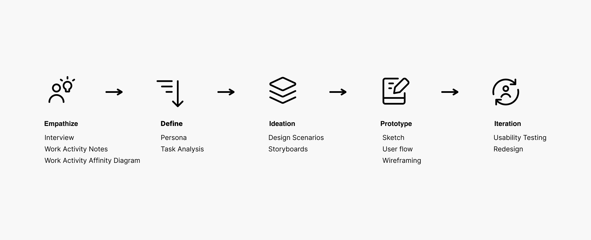
Empathize
Conducted 11 Interviews to Understand How Gen Z Plans Group Trips
As young adults, many experience a growing desire to travel, but getting started with planning—especially in a group—can feel overwhelming. From accommodating everyone’s preferences to managing communication, group travel often presents logistical challenges. To understand how Gen Z plans trips with friends, we created a research plan that combined contextual inquiries and semi-structured interviews. We interviewed 11 participants aged 22 to 28, all with experience in group travel. Each team member recruited at least two participants. Over the course of four days, we conducted 8 remote sessions via Zoom and 3 in person. Participants walked us through how they typically organize group trips and manage shared information, followed by open-ended questions to uncover pain points, behaviors, and unmet needs., we asked questions to uncover the specific problems they encountered along with follow-up questions as needed.
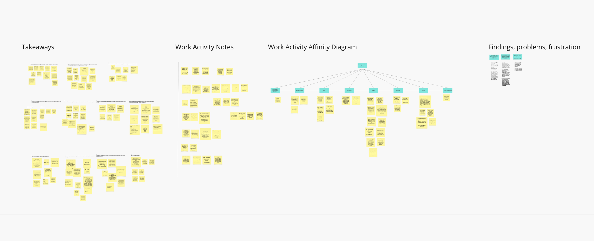
Empathize
Key Takeaways
With all the interviews finished, we gathered the raw comments from the interviews and synthesized work activity notes to get an overview of findings. After the completing Work Activity Notes, we created a Work Activity Affinity Diagram to organize takeaways from interviews, identify common pain points, and generate insights. From the interviews, several common pain points emerged:
- Balancing Preferences and Budget:Many participants found it challenging to create trip plans that satisfied everyone’s interests while staying within budget.
- Staying Updated: School, work, and limited phone usage made it difficult for participants to keep up with group updates and changes.
- Scattered Communication: Information was often shared across multiple platforms (e.g., messaging apps, social media, spreadsheets), leading to confusion and missed details.
These findings were synthesized into user personas and activity concepts that reflect how Gen Z travelers plan trips, share information, manage finances, and stay organized. These insights will inform future solution development.
Define
Persona
Based on the process outlined in the previous section, we settled on two user groups to develop the personas around - a traveler who is the main planner that initiates the process (Amanda) and a traveler who likes to come along for the ride (Kush).
Amanda (Planner)
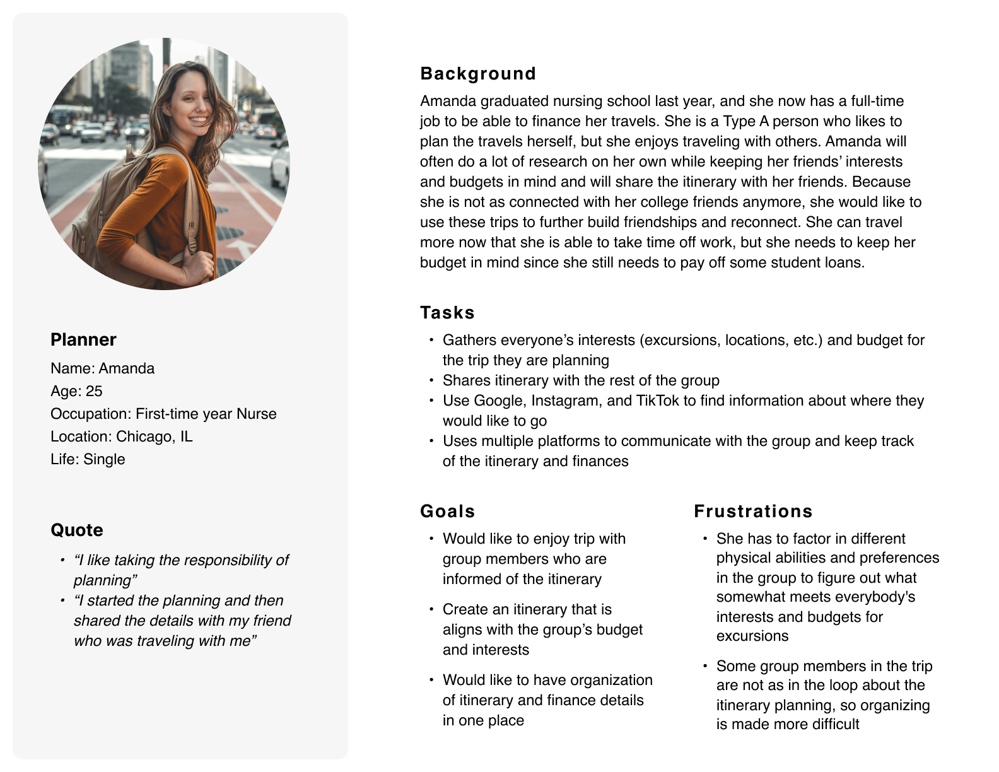
Kush (Follower)
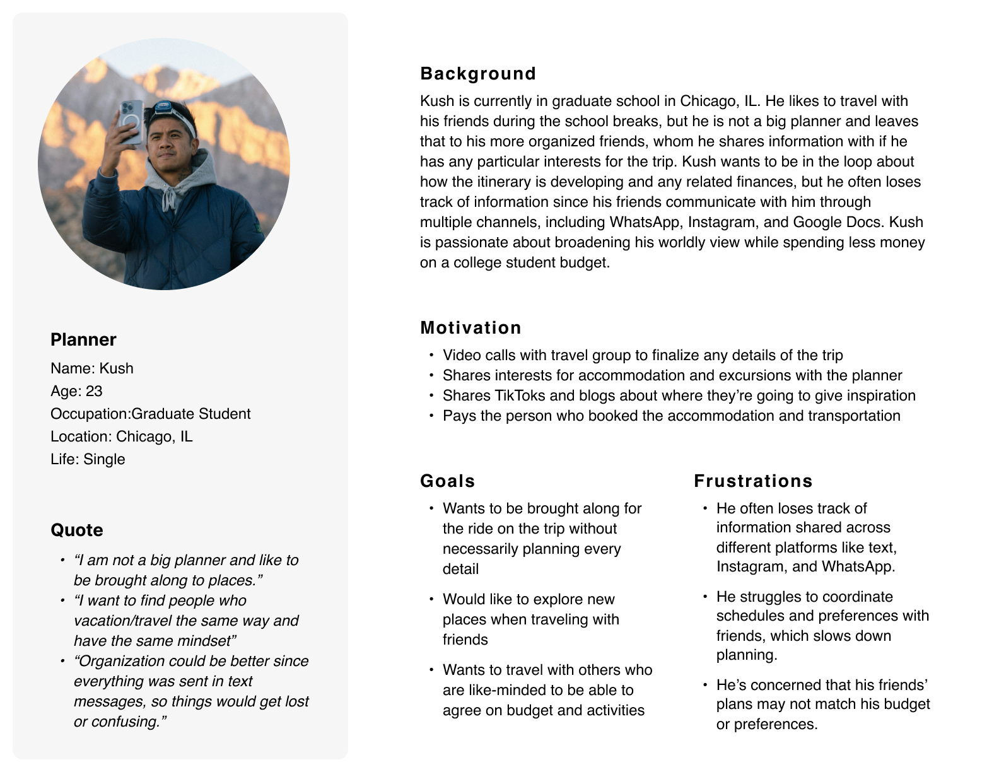
Define
Hierarchical Task Analysis (HTA)
we created a Hierarchical Task Analysis (HTA) by reviewing insights gathered from interviews and the Work Activity Affinity Diagram (WAAD). We then dissected the task of planning a trip into subtasks. This process aimed to get insight into how potential user pain points identified in WAAD align with these subtasks, to understand how users' goals could be achieved, and to help formulate possible requirements.
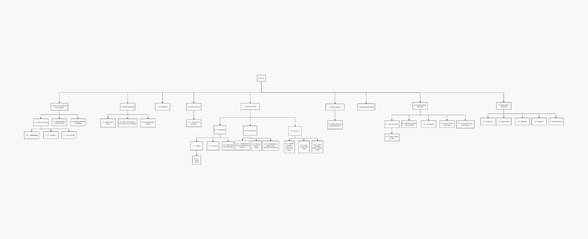
Define
Functional Requirements
After completing the HTA, we proceeded to consolidate ideas stemming from Work Activity Notes, HTA, and WAAD into more concise and unified requirements and compared them against each persona. Most requirements fell into four categories: communication, information tracking, finances, and planning.
| Category | Requirements |
|---|---|
| Communication |
|
| Tracking Information |
|
| Finances |
|
| Planning |
|
Ideate
Design Scenarios & Storyboards
After identifying requirements that overlapped for both personas, we drew storyboards to visualize how these personas would achieve their goals with the implied requirements.
Amanda (Planner)
Design Scenario
After a long shift at the hospital, Amanda decided to plan a vacation to have something to look forward to. She recently graduated nursing school and, now working full-time, has both the time and some funds to travel. Still, she must be mindful of her student loans. While scrolling TikTok, she found inspiration for a trip to Ireland. She researched more using TikTok, Google, and Skyscanner, and reached out to friends via FaceTime who wanted to join. She used the app to invite them, send out a survey to gather preferences and budgets, and organize a day-by-day itinerary. With everyone's input collected in one place, Amanda felt prepared and confident.
Storyboard
Goal: Amanda wants to gather friends’ interests and budgets in one place to better plan the trip.
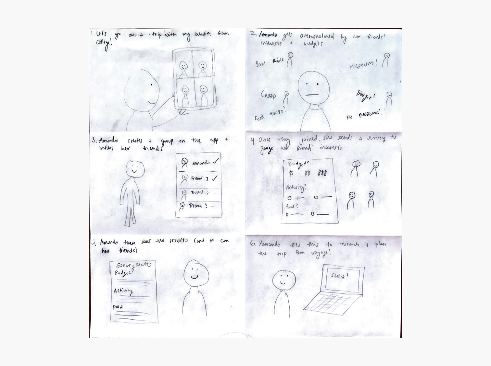
Persona 2: Kush (Follower)
Design Scenario
Kush, a second-year grad student in Chicago, is overwhelmed with his academic workload and prefers not to handle trip planning. He often misses or forgets important messages scattered across Instagram, WhatsApp, and group chats. Concerned about costs and coordination, Kush worries the plans his friends make won't fit his budget. This time, he finds an app that lets him browse existing plans shared by others. He joins a friend’s trip that aligns with his interests and budget, allowing him to participate without the stress of organizing.
Storyboard
Goal: Kush wants to find a friend who already has a trip plan that suits his budget and preferences.
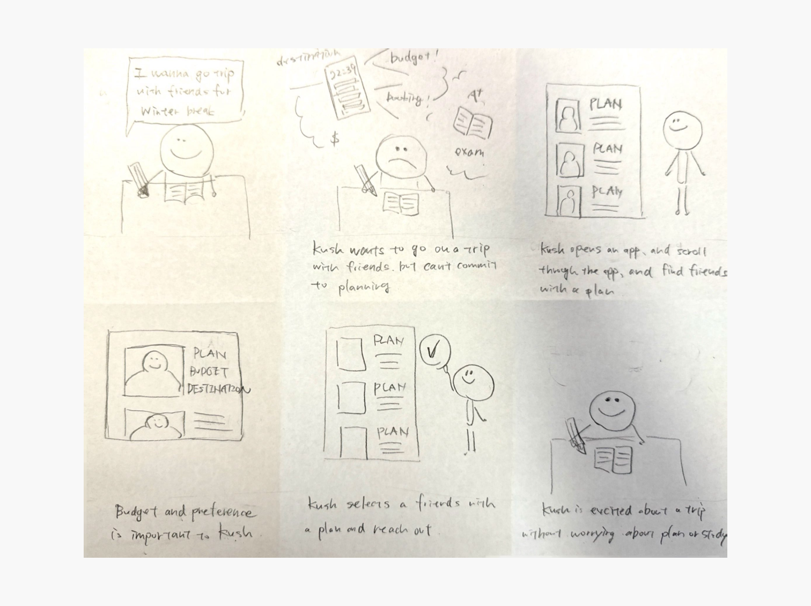
Ideate
User Flow
we created user flows and low-fidelity wireframe sketches to visualize how users would interact with different parts of our interface. This ensured that the navigation of our app is logical and intuitive enough for our potential users, while focusing on what our persona wants from our application.
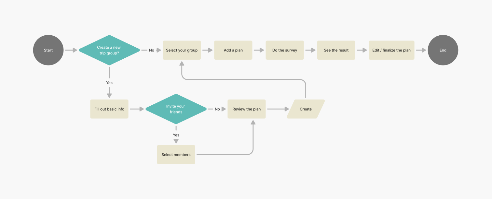
Ideate
Sketches & Low-fi Prototyping
Sketches
We created user flows and low-fidelity wireframe sketches to visualize how users would interact with different parts of our interface. This ensured that the navigation of our app is logical and intuitive enough for our potential users, while focusing on what our persona wants from our application.
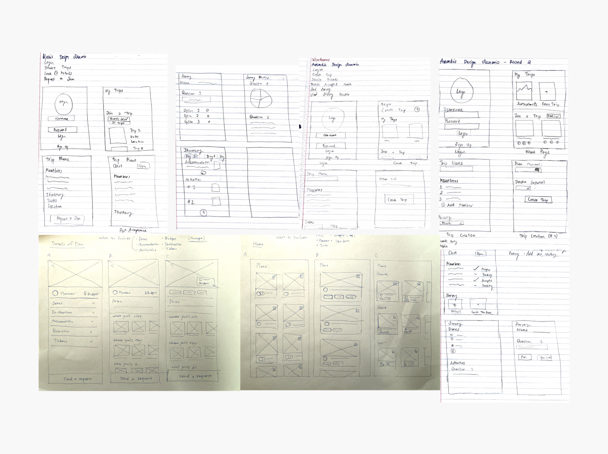
Low-fi Prototyping
We both created low-fidelity wireframes individually and later combined them by choosing the best part from each of them, allowing us to explore as many options as possible and to find new perspectives.
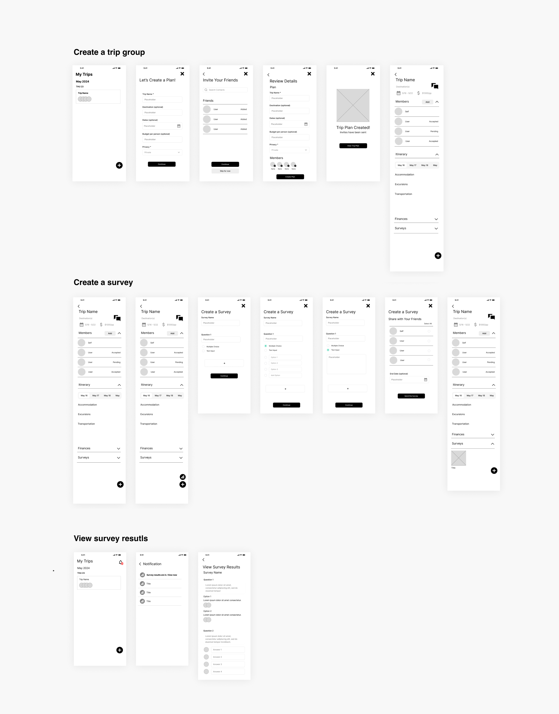
Test
Usability Testing
Scenario
You are planning a trip with your friends for later this year to Ireland. You are still in the early stages of planning, but you would like to know what your friends are interested in for the trip. You’re looking to create a plan that the rest of your friends can see, as well as gather their interests before you start planning further.
Task List
- Create a plan for a trip and add three users.
- Create a survey with:
- One question offering three options for activities
- One open-ended question about dishes they’d like to try
- View the results of the survey you created.
Follow-up Questions
- How did you feel about our app overall? What did you like and dislike about it?
- Was there any part of either task that was difficult or something unexpected that you encountered?
- Did you find either of the features useful and why?
- Are there any features that you would like to see?
Test
Findings & Recommendations
1. Notificatino Change
When we asked the participants to do the third task (view the results of the survey), both had difficulty locating it. We have two ways for users to find the result of the survey: one is through clicking the notification icon on the “My Trips” screen, and the other is under the “Surveys” section in the “Trip Name” screen. One participant clicked each trip plan on the “My Trips” screen instead of the notification bell icon on the same page. The other looked at the survey title card but overlooked clicking it and was unable to find it in the end.Given the observations and feedback from the users, we thought it would be more beneficial to put the notifications on each trip plan on the “My Trips” screen, as well as the survey card under the “Surveys” section on the “Trip Name” screen. This way, the results of the survey are more visible, and users would be able to tell which group they got the notification from.
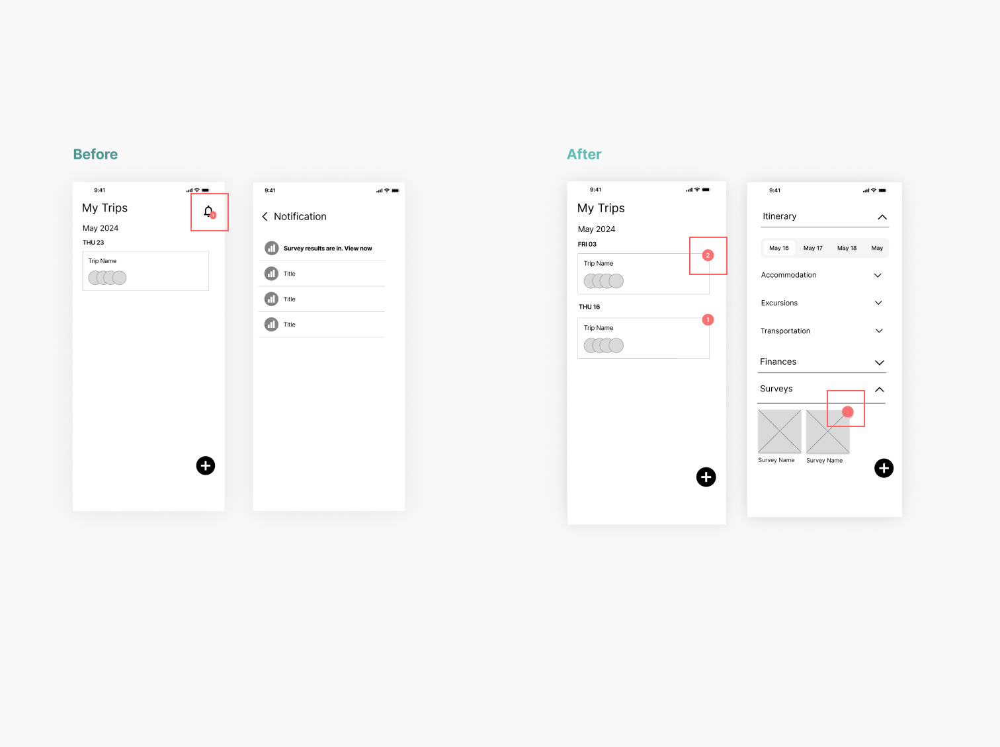
2.Survey Icon
One of the participants thought the button icon for creating a survey looked like some sort of analytics, so it took them a while to figure out where to create the survey. Given this and users would need way to add events, I changed the icons and added buttons to add events.
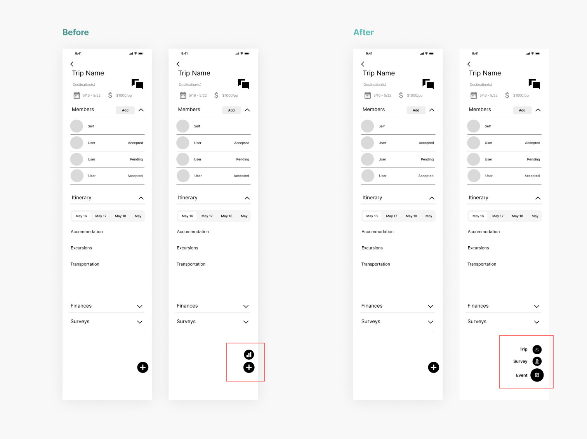
Final Design
Even though, as a team, we didn't do final this time, I personally did final after the project based on low-fi we built. The green ish color reflet joy and friction less traveling experincess.
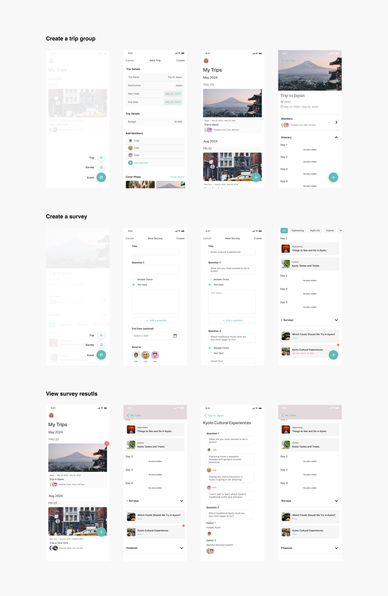
End
Reflection
Usability Testing
Given the time constraints of the project, we were only able to conduct a limited number of usability tests. While the sessions provided valuable initial feedback, increasing the number of participants would have led to more consistent findings and a stronger foundation for design decisions.
Domain Focus
Our contextual inquiry explored how users plan group trips, which surfaced meaningful insights. In retrospect, narrowing our focus—particularly on the communication challenges within group travel— could have allowed us to dig deeper into specific pain points and behaviors, ultimately resulting in more targeted design opportunities.
Interview Questions
Although our interview questions were open-ended, I noticed that some included language that could introduce bias or assumptions, and a few were unintentionally double-barreled. Going forward, I’d pay closer attention to phrasing to ensure questions are clear, neutral, and focused—especially when conducting interviews or contextual inquiries.
Final Design
While our efforts centered on defining the core functionality for an MVP, we did not reach a final visual design due to time limitations. Having a more polished design would have strengthened our presentation and better conveyed the intended user experience.